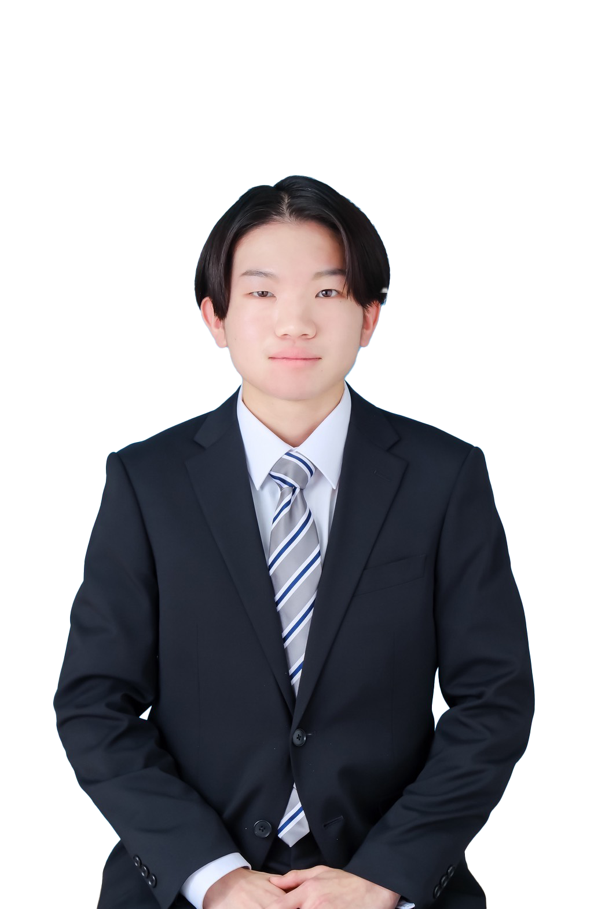

学園長式辞
うららかな陽光が、液晶ディスプレイのブルーライトと心地よく溶け合う季節となりました。 本日、ここに【ランサムウェア】の公開という、記念すべき「開校の日」を迎えられましたことを、運営一同、心よりお慶び申し上げます。 今、皆さんの目の前に広がるこの「ランサムウェア」という学び舎には、教科書もなければ、時間割もございません。あるのはただ、膨大な「コンテンツ」と、皆様の「好奇心」という名のログインパスワードだけであります。 さて、新入生の皆様に、本校での生活において大切にしていただきたい「三つの約束」がございます。 一つ目は、「ブラウザの『戻る』ボタンを恐れないこと」です。 人生においては、一度下した決断を覆すことは容易ではありません。しかし、この学び舎においては、たとえ誤ったリンクを踏み、404エラーの荒野に迷い込もうとも、左上の矢印ひとつでやり直すことが可能です。失敗を恐れず、果敢にクリックを繰り返してください。 二つ目は、「情報の海で、キャッシュを溜め込みすぎないこと」です。 知識を取り入れることは素晴らしいことですが、時には思考の「リロード（更新）」が必要です。古い常識に固執せず、常に最新のバージョンへと自分自身をアップデートし続ける姿勢を持ってください。 三つ目は、「『いいね』や『ブックマーク』という名の、他者への敬意」です。 この広大なインターネットという教室において、我々は一人ではありません。良質なコンテンツに出会った際は、それを心に留めるだけでなく、適切なアクションをもって称えてください。その一動作が、次なる創造の糧となります。 結びに、皆様のブラウジング体験が、通信速度制限に阻まれることなく、常に高速かつ安定したものであることを。そして、このサイトが皆様にとって「お気に入り（ブックマーク）」の筆頭となることを祈念いたしまして、私の式辞といたします。 令和[8年]年[2月][16日] [ランサムウェア] 学園長 [笠井健翔]